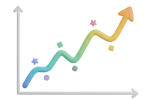
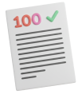

· SLA 기반 원서 중심 교육
· 발달 단계별 학습 경로 제시
· SR·ESR 데이터로 성장 분석
· 트렌드와 피드백 반영한 커리큘럼
책을 다독하는 즐거움이 사고력과 성과로 이어지는
에픽을 소개합니다
에픽영어학원은 '감'이나 '열정'을 넘어
전문성과 시스템으로 증명합니다
데이터 기반 성장 블루프린트
검증된 시스템으로 완성시키는 아이의 잠재력
· 제2언어 습득 이론(SLA)에 기반한 검증된 원서 중심 교육
· SR테스트 주관사의 공식 인증기관으로 데이터 기반 교육 제공
· 발달 단계에 최적화된 학습 경로를 명확하게 제시
· 학부모 피드백과 교육 트렌드를 반영해 진화하는 커리큘럼
최고의 시스템을 위한 최고의 팀
전문성과 헌신으로 실현하는 교육의 차이
· 아이의 성과와 학부모 만족을 최우선으로 하는 팀 문화
· SKY 출신 포함, 최정예 교사진의 균일한 퀄리티 보장
· 교육·상담·운영팀이 협력하는 체계적인 밀착 관리
· 최적의 교육 철학을 제시하는 아이비리그 출신 경영진
올인원 포트폴리오로 미래를 견인
핵심부터 심화, 몰입, 확장까지 아우르는 경험
· 플래그십: 원서기반 영어 습득에 최적화된 정규 프로그램
· 워크숍: 매주 토요일 제공되는 맞춤형 8주 심화 코스
· 부스터: 방학을 즐거운 성장의 기회로 만드는 몰입 특강
· 커뮤니티: 영어를 즐기며 리더십을 키우는 주말 액티비티
첫걸음부터 최상위권 도약까지
구간별 맞춤형 영어 공부를 제공합니다
아이의 포트폴리오, 성과 데이터,
그리고 부모님의 목소리로 그 가치를 확인하세요
데이터 기반
다양한 공인된 지표로 아이의
객관적인 실력 향상을 증명합니다
포트폴리오 기반
아이가 완성한 작문과 PBL결과물 등
작업 결과물로 증명합니다
실전 능력 기반

독서를 즐기고 자연스럽게 영어를
구사하는 변화로 증명합니다
실전 능력 기반
독서를 즐겨하고 자연스럽게 영어를
구사하는 실제 변화로 증명합니다
막막했던 영어 공부, 감이 아닌 데이터로
즐거운 성장의 여정으로 바꿔드립니다